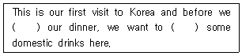
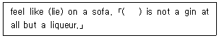
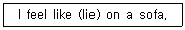
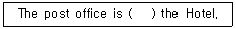
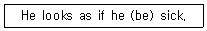

조주기능사 (2001-04-29 기출문제)
1과목: 주류학개론
1. 다음 중 주정도와 관련이 적은 것은?
- 오버 프루프(Over proof)
- 언더 프루프(Under proof)
- 아메리칸 프루프(American proof)
- ℃
(정답률: 80%)

2. 생맥주(Draft Beer) 취급요령 중 잘못된 설명은?
- 2~3℃의 온도를 유지할 수 있는 저장시설을 갖추어야 한다.
- 술통속의 압력은 12~14 pound로 일정하게 유지해야 한다.
- 신선도를 유지하기 위해 입고 순서와 관계없이 좋은 상태의 것을 먼저 사용한다.
- 재고순환(Stock Rotation)을 철저히 실행해야 한다.
(정답률: 82%)
3. 서빙글라스에 직접 2종 이상의 술을 제공하는 방법은?
- 쉐이커(shaker)
- 스트레이너(strainer)
- 노 믹싱(no mixing)
- 너트맥(nutmeg)
(정답률: 60%)
4. 커피는 음료의 어느 부문에 속하는 음료인가?
- 알코올성 음료
- 기호음료
- 영양음료
- 청량음료
(정답률: 알수없음)
5. 위스키의 종류 중 증류방법에 의한 분류는?
- 몰트 위스키(malt whisky)
- 그레인 위스키(grain whisky)
- 블랜디드 위스키(blended whisky)
- 파텐트 위스키(patent whisky)
(정답률: 알수없음)
6. 음료관리방법 중 기계적 관리체제란?
- 사전에 결정된 잔규격에 의해 각병의 잔수를 만들어 미터기로 측정하는 방법
- 재고 및 출고에 입각하여 각종 음료의 실제 소비량을 산출하는 방법
- 판매된 주종의 유형에 의해 판매, 분석하는 방법
- 저장중인 각 병에 판매가를 책정하여 음료판매의 원가 관리를 하는 방법
(정답률: 64%)
7. 브랜디 글라스의 입구가 좁은 이유는?
- 브랜디의 향미를 한곳에 모이게 하기 위하여
- 술의 출렁임을 방지하기 위하여
- 아름다운 술을 마시기 위한 글라스의 데코레이션
- 양손에 쥐기에 편리하도록 하기 위해
(정답률: 82%)
8. 곡물(Grain)을 원료로 만든 무색투명한 증류주에 두송자(Juniper berry)의 향을 착미시킨 술은?
- Tequila
- Rum
- Vodka
- Gin
(정답률: 82%)
9. 스페인 헤레스(Jerez)지방에서 생산되는 세계적인 식전음료 Apertitif Wine은?
- Dry Martini
- Midium dry Sherry
- Dry Sherry
- Cream Sherry
(정답률: 82%)
10. 포도주 저장(Aging of wines)을 처음 시도한 나라는?
- 프랑스(France)
- 포르투칼(Portugal)
- 스페인(Spain)
- 그리스(Greece)
(정답률: 37%)
11. 하이볼 글라스(Highball Glass)용량으로 가장 많이 사용되는 것은?
- 6온스(Ounce)
- 7온스(Ounce)
- 8온스(Ounce)
- 9온스(Ounce)
(정답률: 60%)
12. 저장중인 음료관리를 위한 표준 설정방법 중 바틀 코드 넘버 시스템(Bottle Code Number System)용도가 아닌 것은?
- 음료관리 양식 및 절차를 대폭 표준화하기 위함이다.
- 재고 파악을 신속하고 용이하게 하기 위함이다.
- 음료 저장실 물자 배치를 표준화하기 위함이다.
- 양목표(Recipe)기준을 표준화하기 위함이다.
(정답률: 47%)
13. 드라프트 비어(Draft beer)란?
- 독한 맥주
- 생맥주
- 포터(Porter)맥주
- 스타우트(Stout)
(정답률: 알수없음)
14. 음료 주문 받는 요령을 설명한 것 중 틀린 것은?
- 상냥하게 인사한다.
- 시계 방향으로 여성을 먼저 받는다.
- 메뉴를 보여준다.
- 음료 주문전에 음식 주문을 받는다.
(정답률: 30%)
15. 다음 중 칵테일용 향신료와 거리가 먼 것은?
- 시나먼(cinamon)
- 너트멕(nutmeg)
- 민트(mint)
- 크림(cream)
(정답률: 60%)
16. 다음 중 롱 드링크(long drink)에 해당하는 것은?
- 사이트 카(Side car)
- 스팅거(Stinger)
- 로이얄 휘즈(Royal fizz)
- 맨하탄(Manhattan)
(정답률: 54%)
17. 다음의 Raw whisky 설명 중 옳은 것은?
- 증류기에서 바로 나와 냉각시킨 위스키이다.
- 향나무 통에서 성숙시켜 바로 생산된 위스키이다.
- 증류기에 넣기 전에 준비된 것이다.
- 참나무를 끄슬려 만든 통에서 오래 저장된 위스키이다.
(정답률: 28%)
18. "생명의 물"이라고 지칭되는 술이 아닌 것은?
- 위스키
- 브랜디
- 보드카
- 진
(정답률: 73%)
19. 조주원(Bartender) 준수규칙 중 틀린 것은?
- 조주는 규정된 기준 양목(Recipe)에 의해 만들어야 한다.
- 비번시에는 업장 근처에 서성거려서는 안된다.
- 근무시간 중에는 대기상태로 항상 서서 근무에 임한다.
- 빈병은 고객이나 동료에게 줄 수 있다.
(정답률: 알수없음)
20. 표준 조주법(standard recipes)을 설정하는 목적에 대한 설명 중 틀린 것은?
- 품질과 맛의 계속적인 유지
- 원가계산을 위한 기초 제공
- 표준 조주법 이용은 노무비 절감에 기여
- 특정인에 대한 의존도를 높임
(정답률: 70%)
21. 일과 업무 시작전에 바(Bar)에서 판매 가능한 양만큼 준비해 두는 각종의 재료를 무엇이라고 하는가?
- Bar Stock
- Par Stock
- Pre-Product
- Ordering Product
(정답률: 64%)
22. 샴페인 제조시 당분의 첨가량 표시를 설명한 것 중 틀린 것은?
- 도우(Doux) : 12%이상
- 데미 섹(Demi Sec) : 9-10%
- 섹(Sec) : 8%
- 엑스트라 섹(Extra Sec) : 1-2%
(정답률: 20%)
23. 버본 위스키(Borubon Whiskey) 80Proof는 우리나라 주정도수로 몇도 인가?
- 35도
- 40도
- 45도
- 50도
(정답률: 74%)
24. 다음 중 포도주의 산지로 유명한 곳은?
- Pilsner
- Bordeaux
- Staut
- Mousseux
(정답률: 77%)
25. 다음의 Gin에 혼합하는 탄산음료 중 가장 많이 사용되는 것은?
- Cola
- Collins mix
- Fanta Grape
- Cider
(정답률: 46%)
26. Bar 업무능률 향상을 위한 시설물 설치 방법 중 옳지 않는 것은?
- 칵테일 얼음은 Bar 작업대 옆에 보관한다.
- Bar의 수도시설은 믹싱 스테이션(Mixing Station)바로 후면에 설치한다.
- 냉각기(Cooling Cabinet)는 주방에 설치한다.
- 얼음제빙기는 가능한 Bar 내에 설치한다.
(정답률: 54%)
27. 중요한 연회시 그 행사에 관한 모든 내용이나 협조사항을 호텔 각 부서에 알리는 행이라 부르는가?
- Event order
- Check-up list
- Reseration sheet
- Banquet Memorandum
(정답률: 55%)
28. 바에서 사용하는 하우스 브랜드(House brand)란 무엇을 뜻하는가?
- 널리 알려진 술 종류
- 지정 주문이 아닐 때 쓰는 술 종류
- 상품(上品)에 해당하는 술 종류
- 조리용으로 사용하는 술 종류
(정답률: 75%)
29. 위스키 1 Fifth 의 용량으로 맨하탄 칵테일 몇 인분을 만들어 낼 수 있는가?
- 1인분
- 17인분
- 26인분
- 30인분
(정답률: 50%)
30. Creme De Cacao로 만들 수 있는 칵테일이 아닌 것은?
- Cacao Fizz
- Mai-Tai
- Alexander
- Grass hopper
(정답률: 알수없음)
2과목: 주장관리개론
31. 소프트드링크(soft drink) 디켄터(decanter)의 올바른 사용법은?
- 각종 청량음료(soft drink)를 별도로 담아 나간다.
- 술과 같이 혼합하여 나간다.
- 얼음과 같이 넣어서 나간다.
- 술과 얼음을 다같이 넣어 나간다.
(정답률: 91%)
32. 와인을 주재(Wine base)로 한 칵테일이 아닌 것은?
- 키어(Kir)
- 블루하와이(Blue hawaii)
- 스피릿처(Spritzer)
- 미모사(Mimosa)
(정답률: 64%)
33. 식욕촉진제로 마시는 칵테일(Cocktail)로서 드라이(Dry)한 칵테일에 사용하는 고명(Garnish)은?
- Cherry
- Orange
- Olive
- Pineapple
(정답률: 91%)
34. 다음 중 천연 발포성 포도주는 어느 것인가?
- 쉐리(Sherry)
- 적포도주(Red wine)
- 샴페인(Champagne)
- 사이다(Cider)
(정답률: 90%)
35. Cat's Eye 칵테일은 어떤 종류의 Glass를 사용하면 적당한가?
- High Ball Glass
- Cocktail Glass
- Collins Glass
- Champagne Glass
(정답률: 75%)
36. Scotch Whisky 의 주 원료는?
- 보리의 맥아
- 호밀
- 감자
- 옥수수
(정답률: 64%)
37. 다음 중 포도로 만들어진 브랜디(Brandy)는?
- Silvowitz
- Mirabelle
- Hennessy X.O
- Calvados
(정답률: 알수없음)
38. 다음 중 인공감미료(人工甘味料)는?
- 그래뉼레이트슈거(granulated sugar)
- 사카린나트리움(saccharine natrium)
- 큐브슈거(cube sugar)
- 파우더슈거(powder sugar)
(정답률: 50%)
39. 머들러(Muddler)사용 방법 중 맞는 것은?
- Garnish를 꽂아 제공한다.
- 주류 용량을 재는 막대기이다.
- 롱 드링크(Long Drink)서비스 및 칵테일 제공시 고객이 직접 휘젓기 할수 있게 음료와 함께 제공한
- 오렌지나 레몬 쥬스를 짤 때 사용하는 Squeezer이다.
(정답률: 알수없음)
40. 영업을 위한 준비작업 중 틀린 것은?
- 바 시설 및 기물작동 점검
- 일일 보급 수령
- 고명장식 준비
- 영업일보 작성
(정답률: 알수없음)
41. 다음 중 가장 오래 숙성된 술은 어느 것인가?
- Vodka
- Cognac
- Gin
- Borubon whiskey
(정답률: 60%)
42. 그레이트 와인(Great Wine)은 몇 년간 저장하여 숙성시킨 것인가?
- 5년 이하
- 10년 이하
- 5년~15년
- 15년 이상
(정답률: 40%)
43. 적색 포도주(Red Wine)병의 바닥이 요철로 된 이유는?
- 보기가 좋게 할려고
- 안전하게 세우기 위하여
- 용량표시를 쉽게 하기 위하여
- 찌꺼기가 이동하는 것을 방지하기 위하여
(정답률: 100%)
44. 다음 중 리큐르는 어떤 것인가?
- Burgundy
- Bacardi Rum
- Cherry Brandy
- Canadian club
(정답률: 47%)
45. 칵테일 파티를 준비하는 요소로서 적합하지 못한 사항은?
- 초대 인원 파악
- 개최일시와 장소
- 파티의 매너(manner)
- 메뉴의 결정
(정답률: 75%)
46. 올드 패션(old fashioned) 칵테일의 장식은?
- 아몬드 스터프드 올리브(Almond stuffed Olive)
- 마라시토 체리(Maraschino Cherry)
- 레몬 슬라이스, 오렌지 슬라이스
- 체리와 오렌지 슬라이스
(정답률: 46%)
47. 주류판매에 있어 재무와 창고관리가 양호하다면 가격결정의 이익은 다음 중 어느 것을 선택해야 하는가?
- FIFO 방법
- LIFO 방법
- 구매와 동시 판매방법
- 포도주나 브랜디는 창고에 오래 저장하였다 판매할수록 좋다.
(정답률: 67%)
48. 와인 스트워드(wine steward)의 주된 임무는?
- 와인 구매
- 와인 저장
- 와인 판매
- 와인 검수
(정답률: 25%)
49. 물품검수시 주문내용과 차이가 발견될 때 반품하기 위하여 작성하는 서류는?
- 송장(invoice)
- 견적서(price quo t ation sheet)
- 크레디트 메모(credit memo)
- 검수보고서(receiving sheet)
(정답률: 알수없음)
50. 레드와인을 서어브할 때의 가장 적정한 온도는?
- 5℃ - 10℃
- 12℃ - 15℃
- 17℃ - 19℃
- 20℃ - 25℃
(정답률: 알수없음)
3과목: 고객서비스영어
51. 다음 ( ) 안에 알맞은 단어는?

- have, try
- having, trying
- serve, served
- serving, be served
(정답률: 50%)
52. Which is the correct one as a base of Alexander in the following?
- Brandy
- Vodka
- Gin
- Whisky
(정답률: 55%)
53. 다음 괄호 안에 알맞는 말은?

- Dry gin
- Golden gin
- Flavored gin
- Sloe gin
(정답률: 46%)
54. "초청해주셔서 감사합니다."의 올바른 표현은?
- Thank you for inviting me.
- Thank you for invitation me.
- It was thanks that you call me.
- Thank you that you invited me.
(정답률: 58%)
55. 문장의 내용으로 보아 ( ) 안의 동사형을 바르게 변형시킨 것은?

- lain
- laid
- lying
- laying
(정답률: 46%)
56. What is a tumbler?
- A flat-bottomed glass without stem.
- Footed ware
- Stemware
- Beer mug
(정답률: 50%)
57. 다음 괄호 안에 알맞는 말은?

- close
- closed by
- close for
- close to
(정답률: 알수없음)
58. What is the best-known straignt American whiskey?
- Bourbon
- Rye
- Scotch
- Irish
(정답률: 50%)
59. 문장의 내용으로 보아 ( ) 안에 동사형을 바르게 변형시킨 항은?

- is
- was
- were
- has been
(정답률: 6%)
60. "It is up to you" means?
- It is difficult for you.
- You must decide.
- You look confused.
- It is just in front of you.
(정답률: 55%)